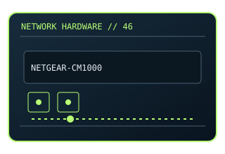

[ MODEL-SPECIFIC NETWORK HARDWARE ]
NETGEAR CM1000 DOCSIS 3.1 Cable Modem
DOCSIS 3.1 cable modem with a single Gigabit Ethernet handoff. This entry uses the labeled manufacturer model identifier and cites primary product/support documentation.

MODEL IDENTIFICATION: Match the complete model/part number and hardware revision on the item label to manufacturer documentation. Do not apply this entry to near-name variants.
Exact specifications and compatibility
| Cataloged model | NETGEAR CM1000 DOCSIS 3.1 Cable Modem |
|---|---|
| Dedicated subcategory | Modems and line-termination devices |
| Bus / host interface | Coaxial cable WAN; 1 × Gigabit RJ-45 Ethernet to router/host. |
| Ports / physical interfaces | DOCSIS 3.1 with DOCSIS 3.0 fallback; one Ethernet port; no built-in Wi-Fi/router. |
| PHY, radio or protocol | Cable modem termination system/ISP controls provisioning and firmware. |
| PoE | No PoE input or PoE output is documented for this product. |
| Link-rate vs throughput | DOCSIS service capability is not Internet speed; CM1000 Ethernet interface is 1Gb/s nominal. Link rates are nominal negotiated/PHY specifications, not measured application throughput; no measured specimen result is claimed. |
| Firmware / driver support | ISP-controlled firmware; no ordinary PC driver; check NETGEAR and ISP compatibility listings. |
| Compatibility checks | Confirm ISP certification, service tier and exact CM1000 revision; pair with a separate router if needed. |
Model-specific notes
Do not treat DOCSIS maximums as guaranteed downstream service.
Primary manufacturer sources
- NETGEAR CM1000 official specifications and supportManufacturer product specification or documentation for the exact model/family.
- Manufacturer support and compatibility resourcesFirmware, driver, compatibility, revision or support details; applicability may depend on the exact hardware revision and region.
Vendor maximum rates are not test results. Confirm regional variants, hardware revision and current support status with the manufacturer.